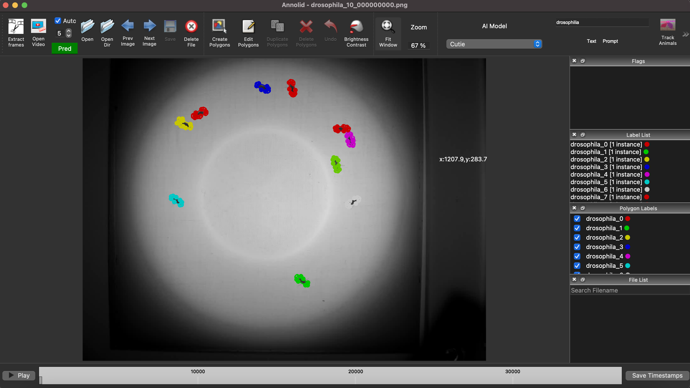

1 frame
Bootstrapped multi-animal tracking from a minimal seed annotation.
Research-grade animal behavior analysis
Annolid combines annotation, segmentation, identity tracking, and behavior analytics in one practical workflow.

Bootstrapped multi-animal tracking from a minimal seed annotation.
Interactive correction and reproducible command-line pipelines.
Stable annotation semantics for round-trip compatibility and export.
Polygon, keypoint, and mask-based labeling designed for real lab footage.
Predict forward, pause at drift, correct once, and continue with updated context.
Distance metrics, event windows, and behavior summaries from tracked outputs.